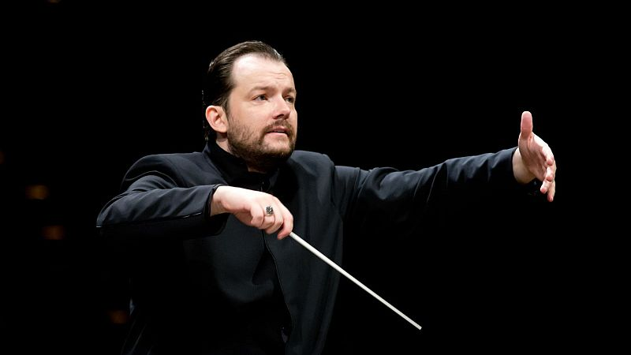
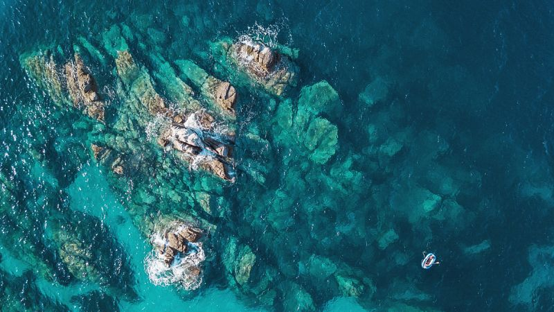
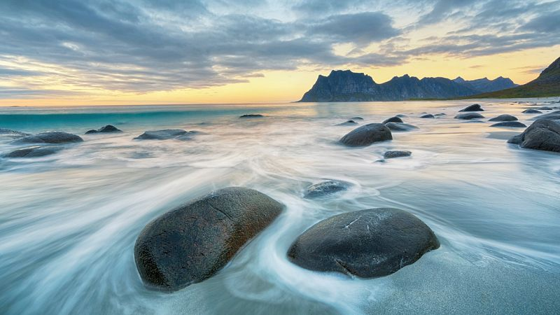
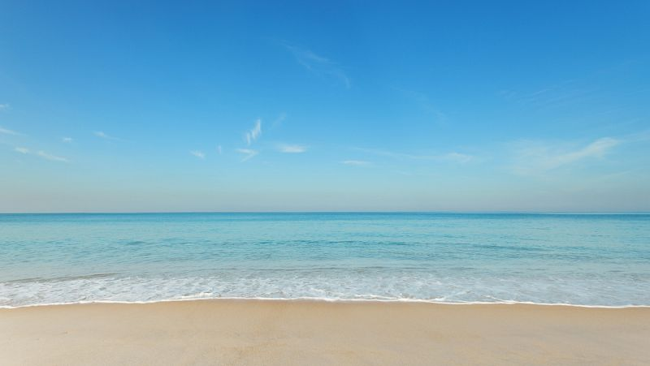

Radio
Audio
Programas radiofónicos emitidos en Radio Clásica, emisora de RTVE, con una mirada cultural y narrativa sonora.
01
Clásicos Actuales
Programa de Radio Clásica dedicado a explorar la presencia de la música clásica en formatos audiovisuales contemporáneos y su permanencia en la memoria colectiva.
02
Vistas al mar
Programa estival de Radio Clásica construido a partir de selecciones musicales y líneas temáticas que articulan cada recorrido sonoro.

Obras incompletas
Escuchar episodio
Estaciones, primavera y flores
Escuchar episodioPaz, justicia y libertad
Escuchar episodio